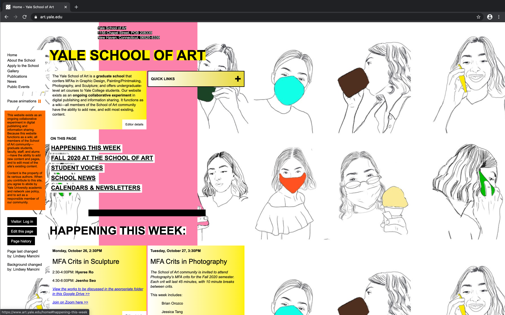

WebPage Designs
Designs I dislike
The page of the Yale School Of Art was clearly not made with beauty in mind. They do have a variety of colors, but everything is in random positions. They use horrible font, the navigation isn't visible in the top left, and all of this is probably because the page was maintained by students. Being that it is Yale, you would expect them to at least have a favicon but they don't.
Designs I like
The website FeedMusic.com is very well setup. It has a beautiful background that loops and well organized content. Animations are neither too much or too little complex. It's eye appealing to users and has nice bright colors.

This second website Etq.com contains nice graphics and a very simple navigation bar. Images are well organized on the page in a way that is easy to read/view. They have short but concise definitions of their shoes for sale.